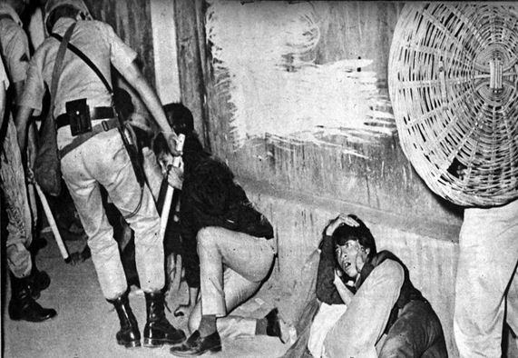

What Philippines was like after Martial Law
Martial Law is referred as the imposition of a leader, which is usually the head of the government, or the military governor. This means that the leader has the power to remove or cease all the powers in the branches of the government. Declaration of Martial law can be either temporary or permanent, depending on the circumstances. Here are some of the negative effects of the 1972 Martial Law:
Police Power
Police forces gained more privilege to exercise their position as security personnel. During this period, they became more powerful. However, instead of using it for good cause, most abused their powers for their own good . Some of them catch others according to their interests.
Human Rights
Many Filipinos were robbed of their rights. There were many mass protest with response to human rights abuse, which further degrades both political and economic situation of the society. About 70,000 people were imprisoned and 34,000 tortured, while 3,240 were killed from 1972 to 1981. Many experienced different forms of torture methods. Prisoners, some who were innocent, were electrocuted, beaten up, and strangled. They were burned with a flat iron or cigars. Water was poured down their throats, then forced out by beating.
Economic Collapse
During the first years of the Martial Law, the economy increased stability, and business confidence was renewed by Marcos's appointment of economic planning posts. However, with the freezing of all three branches and the concentration of police and military forces that only follows orders from the government, the economic stability of the nation collapsed.
Unemployment
The unemployment rate rose from 5.2 percent to 5.9 percent from 1978 to 1983, while underemployment was an even larger problem, tripling, in the same time period, from 10.2 percent to 29.0 percent.
However, despite the awful memory of this administration, it is not a doubt that his regime brought a positive strobe light in the Philippines. The Marcos regime has made our country into a disciplined one and has even placed the Philippines in the map. Additionally, the inner nationalism of the Filipinos eluded in a manner of protest against the abuses being done to their innocence.
When the Martial Law was implemented, the whole country became extremely disciplined. A notable change would be the implementation of the curfew at night. Just try to walk along the sidewalk past curfew time, and surely the police will tail you and give disciplinary actions. That is why once the curfew time starts, the streets of the Philippines can be comparable to Ghost Town. With this strict policy, crime rates totally went down the drain. This kind of discipline, although bad in its nature, has given Filipinos the opportunity to compare and contrast what it was before and what it is now. If people compare the kind of discipline the Filipinos experienced during the Marcos regime to the present, the big difference would be notable. Truth be told: Filipinos of today have become extremely undisciplined
References:
http://factsanddetails.com/southeast-asia/Philippines/sub5_6b/entry-3844.html
http://www.rappler.com/newsbreak/iq/146939-martial-law-explainer-victims-stories
http://www.rappler.com/nation/152159-bataan-nuclear-power-plant-consult-scientists-recto
What Philippines was like after Martial Law?
Approach any old Filipino citizen and interrogate him about Marcos regime. He probably may talk about the atrocities brought about by Marcos's reign, with all the abuses and deaths that dominated during his time.
Why did Martial Law happen?

Generally, according to the Philippine History Organization, it was mainly to establish the country towards what they call a 'New Society'. The purpose of it is not to make military power overtook the people's rights but to protect the national government and the people governed by it against communism.